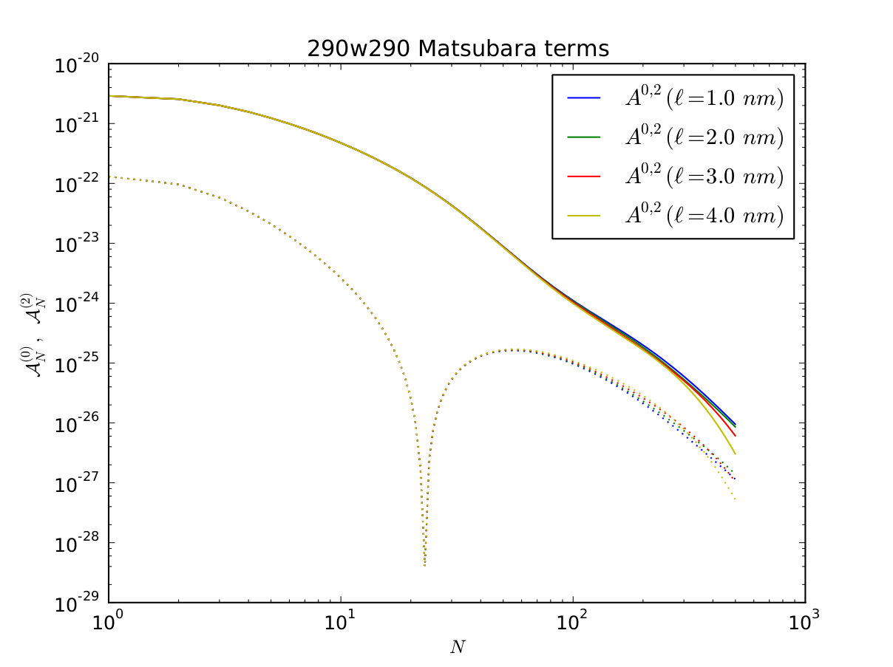

Next:
[29,0] Log-log plot of
Up:
[29,0]
Previous:
[29,0]
Contents
[29,0] terms of Matsubara sum
Figure:
Full result using Eqs.
,
(a) Anisotropic response functions for CG-10 DNA and water. The DNA response functions in the x and y directions were used as perpendicular and parallel inputs, respectively.

Jaime 2014-04-09